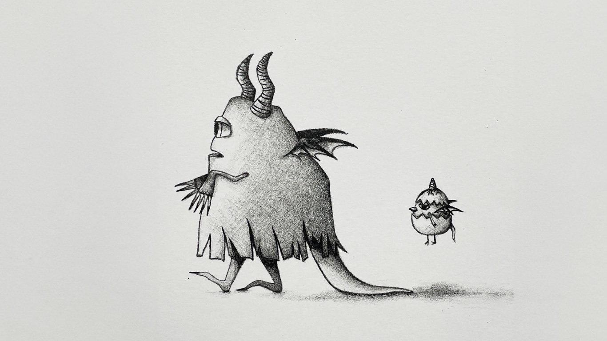

monster
リトグラフ作品
Lithograph
授業内で、リトグラフの作品を制作しました。
デジタル以外の作品制作や、描画をあまりしてこなかったので、平版画手法を使ったリトグラフの体験や、下絵の際のえんぴつ（油性分の強い描画材）を使用したお絵描きが新鮮でとても楽しかったです。
一つ版画が出来てしまうと、インクの色や用紙の種類を変えて刷れるところが、デジタルな部分にも共通していると感じ、西洋の芸術文化の発明に感心しました。
この作品は、絵本のような線が繊細な絵に仕上げたいと考え、影を特徴的に捉えた「Monster」を表現しました。
刷り方が上手くいくと、筆圧などの細かい描写まで再現でき感動しました。
制作期間：修士１年前期